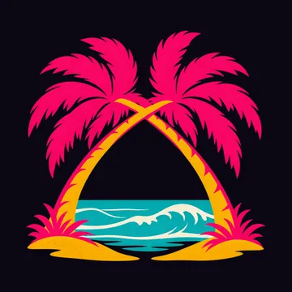
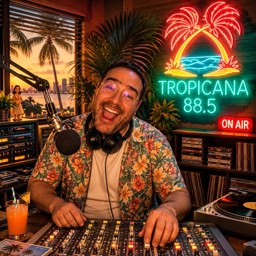

TROPICANA
88.5 FM
LATIN · SALSA · CUIVRES
Le soleil se lève sur 88.5.
▶ Écouter TROPICANA en directÀ l'antenne

Gabriel
Le fondateur d'OKALAM Studio, à l'antenne de Tropicana.
Le fondateur d'OKALAM Studio, à l'antenne de Tropicana.
Jingles
« Quatre-vingt-huit virgule cinq, Tropicana. Il fait trente-quatre degrés, j'ai un sandwich, tout va bien. »
« Tropicana, Vice Bay. La radio de la famille. Si vous n'êtes pas de la famille, restez quand même. »
« C'est Tropicana. Le soleil est gratuit, la glace non. Tonton Glaçon, Beach, 31 parfums. »
Au programme (33 morceaux)
- Arroz Con Pollo · Kevin MacLeod
- Blue Ska · Kevin MacLeod
- BossaBossa · Kevin MacLeod
- Bumba Crossing · Kevin MacLeod
- Carnivale Intrigue · Kevin MacLeod
- Casa Bossa Nova · Kevin MacLeod
- Kali Ghata Chhaye · Chenard Walcker
- Cuban Sandwich · Kevin MacLeod
- Del Rio Bravo · Kevin MacLeod
- Devonshire Waltz Allegretto · Kevin MacLeod
- Digya · Kevin MacLeod
- Dubakupado · Kevin MacLeod
- No Flowers, No Cry · duckett
- Energizing · Kevin MacLeod
- Gonna Start · Kevin MacLeod
- Hackbeat · Kevin MacLeod
- Maccary Bay · Kevin MacLeod
- Mandeville · Kevin MacLeod
- Slow Heat · Kevin MacLeod
- Tafi Maradi no voice · Kevin MacLeod
- Trouble with Tribals · Kevin MacLeod
- Upbeat Forever · Kevin MacLeod
- Verano Sensual · Kevin MacLeod
- Wepa · Kevin MacLeod
- Conquistador · Jeris
- Ol' Man Clothes · Jeris
- Journey To Ascend · Kevin MacLeod
- Tanto Ruido (Bossa Nova Remix) · Klaus_N
- tangos-rhythm-in-e-phrygian · megamuse
- Penso...Logo Desisto · Nethis
- Myxtery · Pitx
- Estoy Nervioso · Sr. Privado
- Tiki Bar Mixer · Kevin MacLeod